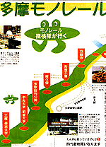
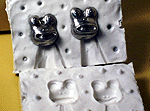

立川に新たなカエル！モノレールを蛙が案内！ 【東京発=Kaeru House同志記者】立川では今年、多摩都市モノレールというのができて、半分は開業してたんだけど、来年ついに全線開業となるわけです。それでか何でか、多摩モノレール新聞が発行されたのですが、なんとそこにカエル（らしい？）キャラクターが載っているではあーりませんか！！「モノレール探検隊」らしいのですが、ちょっとナゾだぞー！？こんどモノレールの会社で聞いてこようと思います。取り急ぎ紙面をスキャンして送ります。 いづれにしても、立川のカエルタウン化がちゃくちゃくと進んでいるということは、まちがえなさそうだ！
立川市のカエル都市化進む【全国かえる奉賛会】平成11年7月14日号で紹介した東京都立川市で、カエル美容室や、カエルハウスの開業が相次いでいるが、今度は、モノレールの案内キャラクターにカエルが起用された。従来は、メカニックな分野のキャラクターとしては起用されることが少なかったカエルだが、ここにきて、安全、高速、信頼性、といったキーワードにも対応してきたということだ。それにしても立川市は、急速にカエル都市化を進めているので、今後とも注目度が高い都市であるぞ。
しっかし、モノレール探検隊っていったいなんなんだあ。
 モローグッズ、第３期分譲に向け、リクエスト受付中！【福岡発=モロー弟子同志記者】モロー君ファンの皆様ありがとうございました。けろテン市場で販売したモロー第２期分譲も完売しました。そしてあと一歩で一番お気に入りのモロー君を連れて帰れなかった方、ごめんなさーい。デザインはすべて一点限りなので注文が重なってしまった方には本当に申し訳ないです。人気が高いやつは次回も同様のデザインでつくるかなー。こんな風なやつがほしい！って方はアイデアくださいねー。投稿採用者に武功カエル徽章を授与！ |
かえる古新聞過去に取り上げた記事を見出し付きで一覧したい人は、ここをクリック◆創刊号を見る◆先週号を見る◆話題の号を見る◆かえる新聞の昔を読む
|
私も入っています。。全国かえる奉賛会
大王様に会うには、このバナーをクリック。ずっと奥に写真館があるぞ。全国かえる奉賛会に入会するには、自分のホームページのどこかに、下の部分を追加するとバナーがリンク付きで表示されるぞ。どんどん入会しましょー |


|